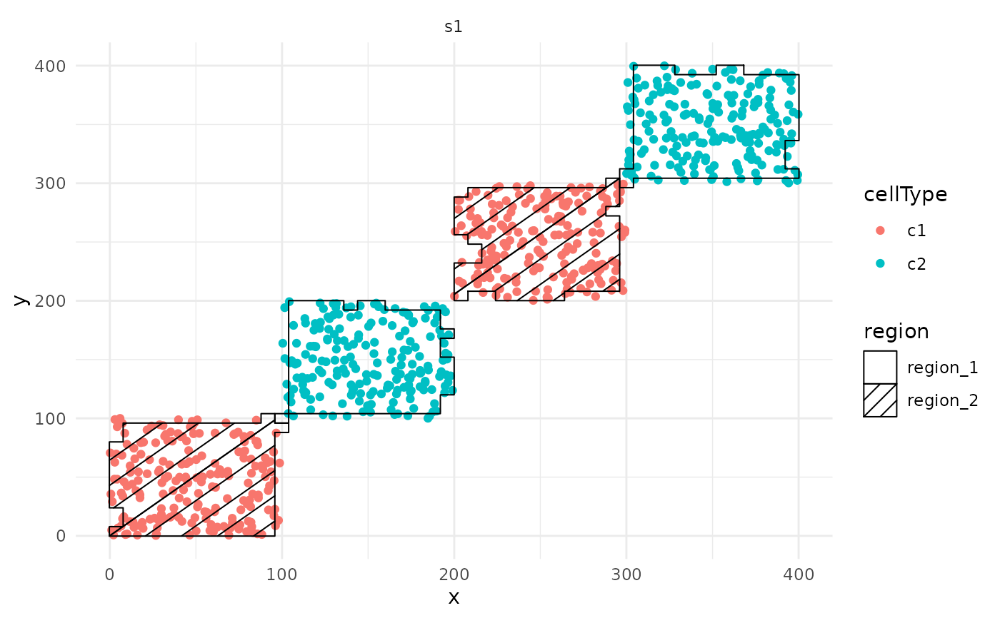
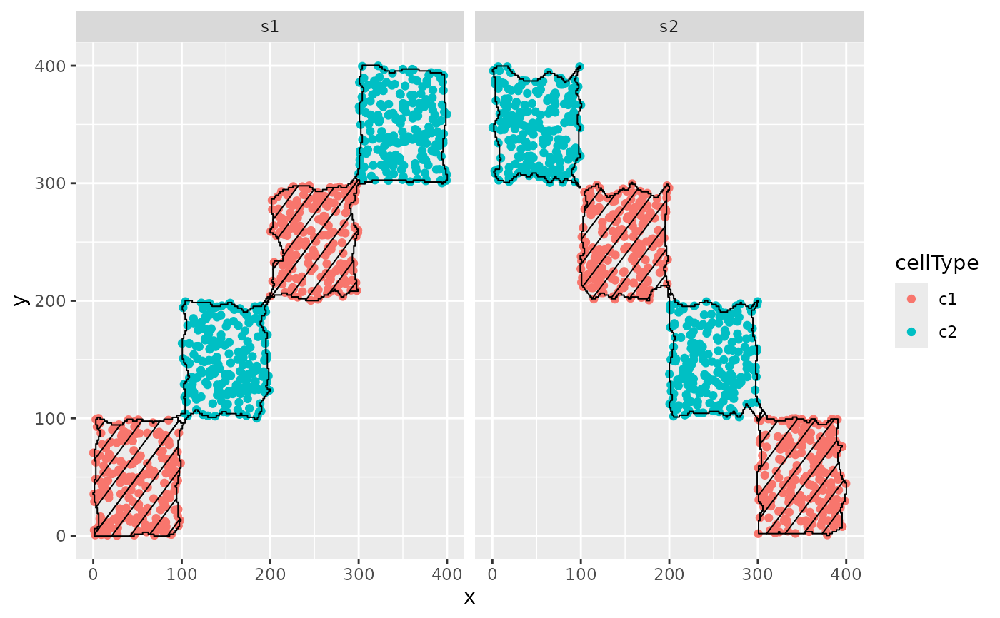

The hatchingPlot() function is used to create hatching patterns for representating spatial regions and cell-types.
The hatching geom is used to create hatching patterns for representation of spatial regions.
Usage
hatchingPlot(
data,
useImages = NULL,
region = "region",
imageID = "imageID",
cellType = "cellType",
spatialCoords = c("x", "y"),
window = "concave",
line.spacing = 21,
hatching.colour = 1,
nbp = 50,
window.length = NULL
)
geom_hatching(
mapping = NULL,
data = NULL,
stat = "identity",
position = "identity",
na.rm = FALSE,
show.legend = NA,
inherit.aes = TRUE,
line.spacing = 21,
hatching.colour = 1,
window = "concave",
window.length = NULL,
nbp = 250,
line.width = 1,
...
)Arguments
- data
The data to be displayed in this layer. There are three options:
If NULL, the default, the data is inherited from the plot data as specified in the call to ggplot(). A data.frame, or other object, will override the plot data. All objects will be fortified to produce a data frame. See fortify() for which variables will be created. A function will be called with a single argument, the plot data. The return value must be a data.frame, and will be used as the layer data. A function can be created from a formula (e.g. ~ head(.x, 10)).
- useImages
A vector of images to plot.
- region
The region column to plot.
- imageID
The imageIDs column if using data.frame or SingleCellExperiment.
- cellType
The cellType column if using data.frame or SingleCellExperiment.
- spatialCoords
The spatial coordinates columns if using data.frame or SingleCellExperiment.
- window
Should the window around the regions be 'square', 'convex' or 'concave'.
- line.spacing
A integer indicating the spacing between hatching lines.
- hatching.colour
A colour for the hatching.
- nbp
An integer tuning the granularity of the grid used when defining regions
- window.length
A tuning parameter for controlling the level of concavity when estimating concave windows.
- mapping
Set of aesthetic mappings created by aes() or aes_(). If specified and inherit.aes = TRUE (the default), it is combined with the default mapping at the top level of the plot. You must supply mapping if there is no plot mapping.
- stat
The statistical transformation to use on the data for this layer as a string.
- position
adjustment, either as a string, or the result of a call to a position adjustment function.
- na.rm
If FALSE, the default, missing values are removed with a warning. If TRUE, missing values are silently removed.
- show.legend
logical. Should this layer be included in the legends? NA, the default, includes if any aesthetics are mapped. FALSE never includes, and TRUE always includes. It can also be a named logical vector to finely select the aesthetics to display.
- inherit.aes
If FALSE, overrides the default aesthetics, rather than combining with them. This is most useful for helper functions that define both data and aesthetics and shouldn't inherit behaviour from the default plot specification, e.g. borders().
- line.width
A numeric controlling the width of the hatching lines
- ...
Other arguments passed on to layer(). These are often aesthetics, used to set an aesthetic to a fixed value, like colour = "red" or size = 3. They may also be parameters to the paired geom/stat.
Examples
## Generate toy data
set.seed(51773)
x <- round(c(
runif(200), runif(200) + 1, runif(200) + 2, runif(200) + 3,
runif(200) + 3, runif(200) + 2, runif(200) + 1, runif(200)
), 4) * 100
y <- round(c(
runif(200), runif(200) + 1, runif(200) + 2, runif(200) + 3,
runif(200), runif(200) + 1, runif(200) + 2, runif(200) + 3
), 4) * 100
cellType <- factor(paste("c", rep(rep(c(1:2), rep(200, 2)), 4), sep = ""))
imageID <- rep(c("s1", "s2"), c(800, 800))
cells <- data.frame(x, y, cellType, imageID)
cells <- SingleCellExperiment::SingleCellExperiment(colData = cells)
## Generate regions
cells <- lisaClust(cells, k = 2)
#> Generating local L-curves. If you run out of memory, try 'fast = FALSE'.
## Plot regions
hatchingPlot(cells)
#> Concave windows are temperamental. Try choosing values of window.length > and < 1 if you have problems.

## Generate toy data
set.seed(51773)
library(ggplot2)
x <- round(c(
runif(200), runif(200) + 1, runif(200) + 2, runif(200) + 3,
runif(200) + 3, runif(200) + 2, runif(200) + 1, runif(200)
), 4) * 100
y <- round(c(
runif(200), runif(200) + 1, runif(200) + 2, runif(200) + 3,
runif(200), runif(200) + 1, runif(200) + 2, runif(200) + 3
), 4) * 100
cellType <- factor(paste("c", rep(rep(c(1:2), rep(200, 2)), 4), sep = ""))
imageID <- rep(c("s1", "s2"), c(800, 800))
cells <- data.frame(x, y, cellType, imageID)
## Generate regions
cells <- lisaClust(cells, k = 2)
#> Generating local L-curves. If you run out of memory, try 'fast = FALSE'.
# Plot the regions with geom_hatching()
ggplot(
cells, aes(x = x, y = y, colour = cellType, region = region)
) +
geom_point() +
facet_wrap(~imageID) +
geom_hatching()
#> Concave windows are temperamental. Try choosing values of window.length > and < 1 if you have problems.
#> Concave windows are temperamental. Try choosing values of window.length > and < 1 if you have problems.
